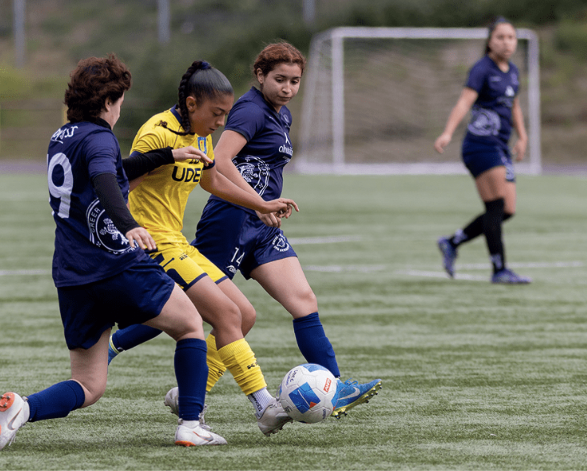

Dirección de Servicios Estudiantiles
El trabajo colaborativo, sistemático y permanente en investigación y creación, realizado en la Universidad de Concepción, es una forma válida de alcanzar altos niveles de calidad y pertinencia.
Conocer más ↗Recepción de certificados médicos
Tarjeta Nacional Estudiantil
Cursos Artísticos y Culturales de libre participación
▪ Unidad de Deportes DISE
Talleres deportivos
Esta Unidad es la encargada de generar instancias deportivas, recreativas y de actividades masivas de integración para la formación integral y de excelencia. Su objetivo principal es entregar a los y las estudiantes las herramientas necesarias para su desarrollo integral al interior de la Universidad y ser la fuente motivadora y precursora de cambios positivos tanto en el aspecto físico como en el mental, a través de difusión o promoción de estilos de vida saludables.
Visita nuestros talleres ↗